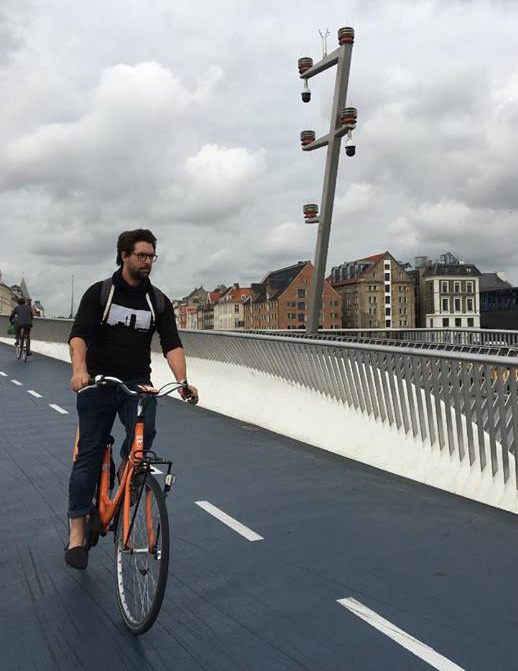
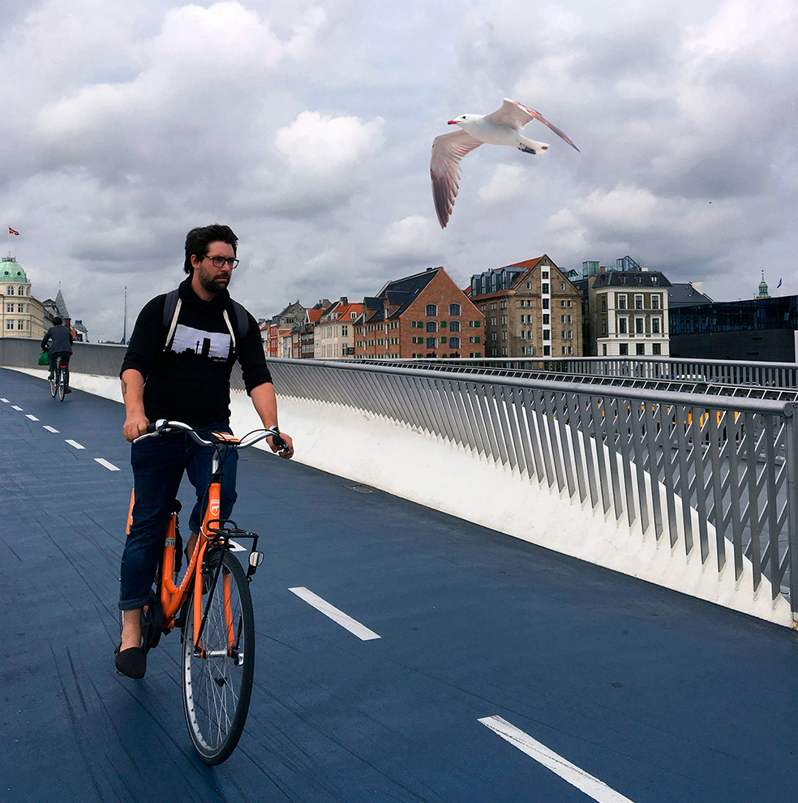

BROPROJEKT 1.SEM - 2018
Dette er mit første photoshop projekt.
Projektet gik ud på at tage billeder af broer i København,
og så udvælge et billede, som man ville arbejde videre med i photoshop.
Jeg faldt over en af de mange cyklister, som dagligt cykler rundt i København.


Jeg har fjernet den store pæl, som var midt i billedet
Samtidig med det, så har jeg klonet vinduerne og noget at den røde,
brunlige bygning som var bagved pælen - for at få det til at falde i et
med resten af bygningen. Jeg har derefter forsøgt at få komplementærkontrasten
(orange og blå), til at være de gennemgående og mest iøjnefaldende farver i billedet
(b.la. cyklen og vejen). Til sidst har jeg klippet en måge ind i billedet.